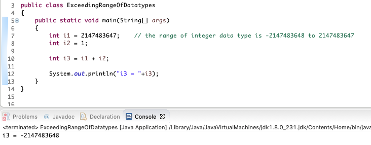

The data types in java are cyclic in nature. In case the value of a variable goes beyond the range of its data type, it starts from the other side of the range of data type.
Note that direct assignment of a value outside the range of data type is not allowed. However, if an expression evaluates to a value which falls beyond the range of destination data type then cyclic behavior of data type values gets observed.
